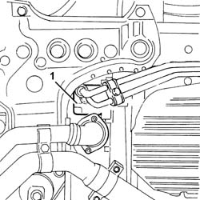
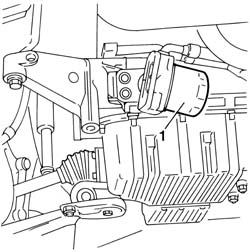
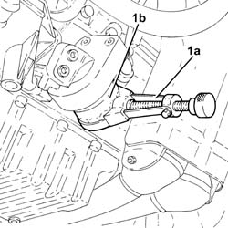
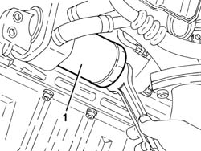
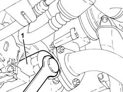
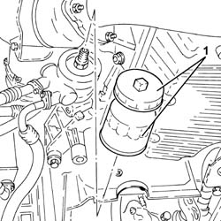
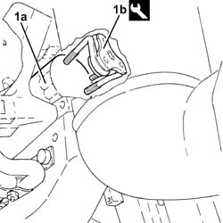

1084B30 engine oil filter r r
- Path
- Procedures > 10 ENGINE > 1084 ENGINE LUBRICATION SYSTEM > 1084B engine oil lubrication circuit > 1084B30 engine oil filter r r
- Kind
- repair procedure (removal / refitting; the operation number is the code)
- Applies to
- engines: 1.6 TS , 1.8 TS, 2.0 JTS, 2.5 V6, 3.2 V6, 1.9 JTD 8v , 1.9 JTD 16v, 2.0 JTS, 2.4 JTD 10v, 2.4 JTD 20v; all production periods
- Interactive page
- https://sloeber94.github.io/elrnDB-a156/en/#/3237615
Applies to: engines: 2.5 V6, 3.2 V6; all production periods
 Removing
Removing
 Refitting
Refitting7055B54 under-engine guard - r r
1. Remove the cartridge engine oil filter working underneath the vehicle and using a suitable tool.

Applies to: engines: 2.5 V6, 3.2 V6; all production periods
Refitting
RemovingLubricate the cartridge engine oil filter seal using engine oil.
Fit the engine oil cartridge filter and tighten it fully by hand.
Applies to: engines: 1.6 TS , 1.8 TS; all production periods
Removing
RefittingPlace the car on the lifting bridge.
7055B54 under-engine guard - r r
1. Unscrew cartridge oil filter support by ad-hoc tool and remove it.

Applies to: engines: 1.6 TS , 1.8 TS; all production periods
Refitting
RemovingMoisten new filter gasket with oil and thoroughly tighten it by hand.
7055B54 under-engine guard - r r
Lower the car.
Applies to: engines: 2.0 JTS, 2.0 JTS; all production periods
Removing
RefittingPosition the vehicle on the ramp.
Proceed with removal 7055B54 under-engine guard - r r .
1. Using a suitable tool (1a), undo and remove the engine oil filter cartridge (1b).

Applies to: engines: 2.0 JTS, 2.0 JTS; all production periods
Refitting
RemovingLubricate the gasket with engine oil and fit the engine oil filter, tightening fully by hand.
Proceed with refitting 7055B54 under-engine guard - r r .
Top up the engine oil lubrication system 1084A10 ENGINE OIL - Check level and top up, if necessary .
Remove the car from the ramps.
Applies to: engines: 1.9 JTD 8v ; all production periods
Removing
RefittingPosition the vehicle on the ramp.
Raise the car.
1. Remove the cartridge engine oil filter using a suitable tool.

Applies to: engines: 1.9 JTD 8v ; all production periods
Refitting
RemovingFor versions prior to engine no. 1586000, replace the engine oil heat exchanger connector with a new unit supplied by Parts that is fitted with a flexible tapered washer in addition to the O-ring. Then tighten to the specified torque.
 | Fastening | Component | Ø | Value (daNm) |
|---|---|---|---|---|
- | Connector | ENGINE OIL HEAT EXCHANGER | - | 6.0 |
Dampen the gasket of the new oil filter with engine oil and screw on the filter fully by hand.
Lower the vehicle.
Top up the engine oil lubrication circuit using the recommended oil.
 | Type | Component | Name | Qty. |
|---|---|---|---|---|
- | Oli [l] | ENGINE LUBRICATION CIRCUIT | SELENIA TURBODIESEL | 4.2 |
For optimum operation of the engine in particularly harsh climatic conditions (temperatures below -15 degrees C), use the recommended oil for the engine lubrication circuit.
| Type | Component | Name | Qty. |
|---|---|---|---|---|
- | Oli [l] | ENGINE LUBRICATION CIRCUIT | SELENIA WR DIESEL | 4.2 |
Remove the car from the ramps.
Applies to: engines: 2.4 JTD 10v; all production periods
Removing
Refitting1. Remove the cartridge engine oil filter using a suitable tool.

Applies to: engines: 2.4 JTD 10v; all production periods
Refitting
RemovingTighten the connector securing the engine oil heat exchanger to the specified torque.
| Fastening | Component | Ø | Value (daNm) |
|---|---|---|---|---|
- | Connector | ENGINE OIL HEAT EXCHANGER | - | 3.0 |
Dampen the gasket of the new oil filter with engine oil and screw on the filter fully by hand.
Top up the engine oil lubrication circuit using the recommended oil.
| Type | Component | Name | Qty. |
|---|---|---|---|---|
- | Oli [l] | ENGINE LUBRICATION CIRCUIT | SELENIA TURBODIESEL | 5.5 |
For optimum operation of the engine in particularly harsh climatic conditions (temperatures below -15 degrees C), use the recommended oil for the engine lubrication circuit.
| Type | Component | Name | Qty. |
|---|---|---|---|---|
- | Oli [l] | ENGINE LUBRICATION CIRCUIT | SELENIA WR DIESEL | 5.5 |
Applies to: engines: 1.9 JTD 16v; all production periods
Removing
RefittingPosition the vehicle on the ramp.
Proceed with removal 7055B54 under-engine guard - r r .
1. Remove the cartridge engine oil filter using a suitable tool.

Applies to: engines: 1.9 JTD 16v; all production periods
Refitting
RemovingLubricate the gasket with engine oil and fit the engine oil filter, tightening fully by hand.
Proceed with refitting 7055B54 under-engine guard - r r .
Refill the engine oil lubrication system - 0010T11 engine oil check level and top up .
Remove the car from the ramps.
Applies to: engines: 2.4 JTD 20v; all production periods
Removing
RefittingPosition the vehicle on the ramp.
Proceed with removal 7055B54 under-engine guard - r r .
Proceed with removal 1076A46 heat shield for catalytic preconverter r r .
1. Remove the cartridge engine oil filter (1a) using the tool (1b).
 | Name | Country |
|---|---|---|
1b | Self-tightening spanner | 1.871.001.200 |

Applies to: engines: 2.4 JTD 20v; all production periods
Refitting
RemovingLubricate the gasket with engine oil and fit the engine oil filter, tightening fully by hand.
Proceed with refitting 1076A46 heat shield for catalytic preconverter r r .
Proceed with refitting 7055B54 under-engine guard - r r .
Refill the engine oil lubrication system - 0010T11 engine oil check level and top up .
Remove the car from the ramps.
Topics linked from this page (3)
- 1076A46 heat shield for catalytic preconverter r r
- 1084A10 ENGINE OIL - Check level and top up, if necessary
- 7055B54 under-engine guard - r r